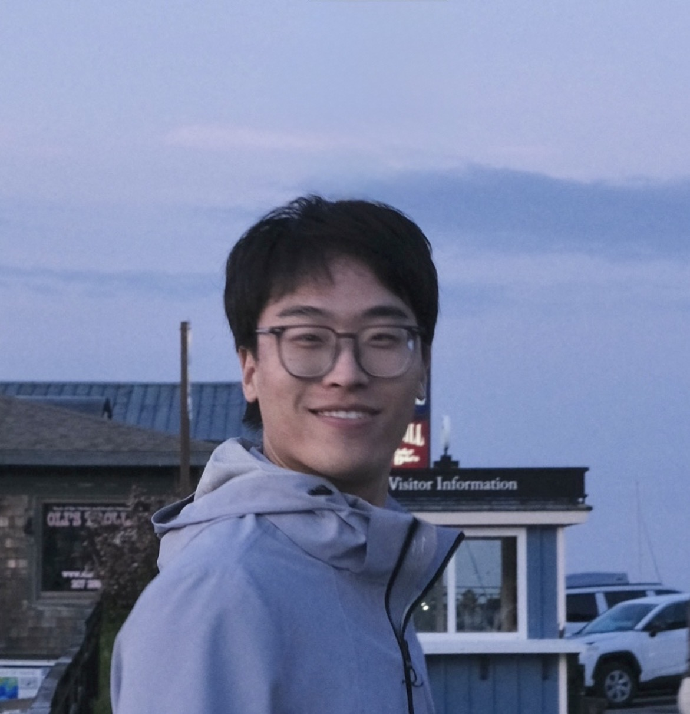

Hi! My name is Xizheng and I am currently at pursuing my Sc.M. in Computer Science, working with Prof. Thomas Serre.
Previously, I did my undergraduate studies at with a triple major in Computer Sciences, Mathematics, and Data Science, where I worked with
Prof. Vikas Singh and Prof. Timothy T. Rogers.
My research interests lie at the intersection of computational cognitive science,
computational linguistics, model evaluation, and brain-inspired models. Specifically, I'm interested in but not limited to (1) 🔍 evaluating and understanding the internal representations of vision and language models through the rigorous lens of cognitive science and neuroscience; (2) 🧠 building novel, biologically-inspired architectures that learn and generalize in more robust, human-like ways.
May 2026 - I graduated from Brown.
Apr 2026 - I accepted my PhD offer at Harvard.